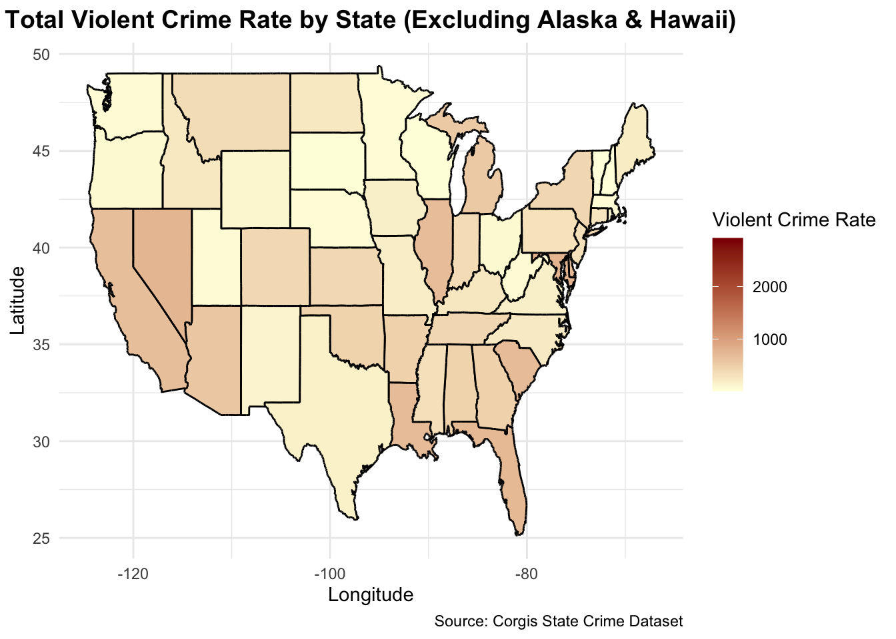
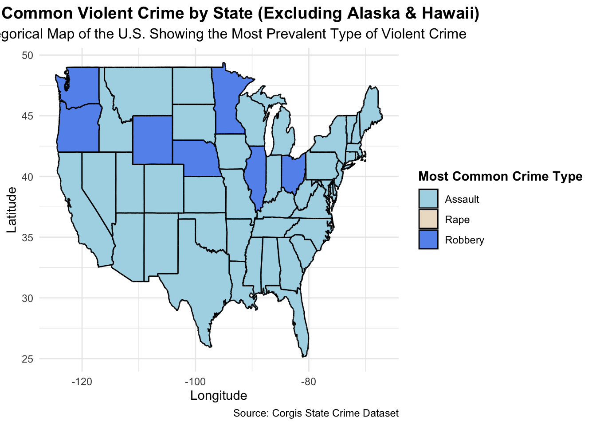

── Attaching core tidyverse packages ──────────────────────── tidyverse 2.0.0 ──
✔ dplyr 1.1.4 ✔ readr 2.1.5
✔ forcats 1.0.0 ✔ stringr 1.5.1
✔ ggplot2 3.5.1 ✔ tibble 3.2.1
✔ lubridate 1.9.3 ✔ tidyr 1.3.1
✔ purrr 1.0.2
── Conflicts ────────────────────────────────────────── tidyverse_conflicts() ──
✖ dplyr::filter() masks stats::filter()
✖ dplyr::lag() masks stats::lag()
ℹ Use the conflicted package (<http://conflicted.r-lib.org/>) to force all conflicts to become errors
library(mdsr)library(maps)
Attaching package: 'maps'
The following object is masked from 'package:purrr':
map
library(dplyr)library(plotly)
Attaching package: 'plotly'
The following object is masked from 'package:ggplot2':
last_plot
The following object is masked from 'package:stats':
filter
The following object is masked from 'package:graphics':
layout
library(sf)
Linking to GEOS 3.11.0, GDAL 3.5.3, PROJ 9.1.0; sf_use_s2() is TRUE
A Static Numeric Map: Total Violent Crime Rate by State(Excluding Alaska and Hawaii)
# Load necessary librarieslibrary(ggplot2)library(maps)library(dplyr)crime <-read.csv("https://corgis-edu.github.io/corgis/datasets/csv/state_crime/state_crime.csv")crime_data <- crime %>%select(State, Data.Rates.Violent.All)crime_data <- crime_data %>%filter(!State %in%c("Alaska", "Hawaii"))crime_data$State <-tolower(crime_data$State)# US map dataus_states <-map_data("state")# Merging datamap_data_merged <-merge(us_states, crime_data, by.x ="region", by.y ="State", all.x =TRUE)# Creating the mapggplot(map_data_merged, aes(x = long, y = lat, group = group, fill = Data.Rates.Violent.All)) +geom_polygon(color ="black") +scale_fill_continuous(name ="Violent Crime Rate", low ="lightyellow", high ="darkred", na.value ="grey") +theme_minimal() +labs(title ="Total Violent Crime Rate by State (Excluding Alaska & Hawaii)", x ="Longitude", y ="Latitude",caption ="Source: Corgis State Crime Dataset") +theme(plot.title =element_text(hjust =0.5, face ="bold", size =14),plot.subtitle =element_text(hjust =0.5, size =12))

Alt-text: This is a static map that visualizes the total violent crime rate by state in the United States, excluding Alaska and Hawaii. Each state is colored according to its violent crime rate per 100,000 people, with a gradient scale transitioning from light yellow (lower crime rates) to dark red (higher crime rates). The plot is titled “Total Violent Crime Rate by State (Excluding Alaska and Hawaii),” and there is a legend on the side indicating the color scale for crime rates. An annotation at the bottom notes the data source as the CORGIS State Crime Dataset.
This map makes it easy to identify areas with high and low crime rates and the purpose of it is to see the regional differences in violent crime rates which can be used in discussions of public safety and law policies. States colored in darker shades of red indicate a higher rate of violent crime, leading to potentially looking into the underlying causes. Additionally, the exclusion of Alaska and Hawaii allows for a focused comparison among the contiguous states. We can see that all states are of varied shades of light yellow, which is not that helpful when it comes to figuring out the state with the highest and lowest. This could be improved by looking at violent crime rates in a specific time span.
A Static Categorical Map: Most Common Violent Crime by State (Excluding Alaska & Hawaii ˆ
# Load necessary librarieslibrary(ggplot2)library(maps)library(dplyr)# Load the crime datasetcrime <-read.csv("https://corgis-edu.github.io/corgis/datasets/csv/state_crime/state_crime.csv")# Exclude Alaska and Hawaii and select relevant columnsviolent_crimes <- crime %>%filter(!State %in%c("Alaska", "Hawaii")) %>%select(State, Data.Totals.Violent.Assault, Data.Totals.Violent.Rape, Data.Totals.Violent.Robbery, Data.Totals.Violent.Murder)# Convert state names to lowercase for joining with map dataviolent_crimes <- violent_crimes %>%mutate(State =tolower(State))# Find the most common violent crime type for each stateviolent_crimes <- violent_crimes %>%mutate(Highest_Crime_Type =case_when( Data.Totals.Violent.Assault >= Data.Totals.Violent.Rape & Data.Totals.Violent.Assault >= Data.Totals.Violent.Robbery & Data.Totals.Violent.Assault >= Data.Totals.Violent.Murder ~"Assault", Data.Totals.Violent.Rape >= Data.Totals.Violent.Assault & Data.Totals.Violent.Rape >= Data.Totals.Violent.Robbery & Data.Totals.Violent.Rape >= Data.Totals.Violent.Murder ~"Rape", Data.Totals.Violent.Robbery >= Data.Totals.Violent.Assault & Data.Totals.Violent.Robbery >= Data.Totals.Violent.Rape & Data.Totals.Violent.Robbery >= Data.Totals.Violent.Murder ~"Robbery", Data.Totals.Violent.Murder >= Data.Totals.Violent.Assault & Data.Totals.Violent.Murder >= Data.Totals.Violent.Rape & Data.Totals.Violent.Murder >= Data.Totals.Violent.Robbery ~"Murder",TRUE~NA_character_ ))# Load US map dataus_states <-map_data("state")# Merge map data with crime datamap_data_merged <-merge(us_states, violent_crimes, by.x ="region", by.y ="State", all.x =TRUE)# Create a categorical static mapggplot(map_data_merged, aes(x = long, y = lat, group = group, fill = Highest_Crime_Type)) +geom_polygon(color ="black") +scale_fill_manual(values =c("Assault"="lightblue", "Rape"="antiquewhite2", "Robbery"="cornflowerblue", "Murder"="burlywood3"), na.value ="grey", name ="Most Common Crime Type") +theme_minimal() +labs(title ="Most Common Violent Crime by State (Excluding Alaska & Hawaii)",subtitle ="Categorical Map of the U.S. Showing the Most Prevalent Type of Violent Crime",x ="Longitude", y ="Latitude",caption ="Source: Corgis State Crime Dataset") +theme(plot.title =element_text(hjust =0.5, face ="bold", size =14),plot.subtitle =element_text(hjust =0.5, size =12),legend.title =element_text(face ="bold"))

Description: For this specific map, I intended it to be categorical but not interactive. This is an easy map to show the most common violent crime act in every state where red is assault, blue is rape and green is robbery. We can see that assault dominates most of the united states while robbery(green) dominates 7 states only. There is zero domination of rape crimes. I like this map since it’s very straight forward, I would want to add abbreviations of each state to make it easier for the viewers to detect where every crime is dominant.